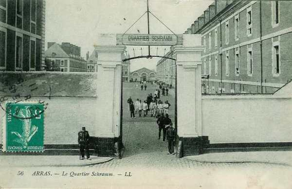
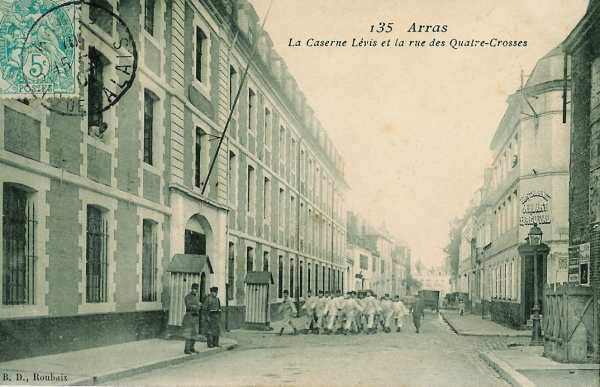

Parcours du 33e R.I. (Arras)
En 1914, le régiment fait partie de la 3e brigade (général Bernard), 2e division (général Duplessis), 1e C.A. (général Franchet d’Esperey). Il est commandé par le colonel Stirn.
5 août :
Le régiment est transporté d’Arras à Hirson. Il va cantonner à Saint-Michel.

.

6 août :
Le régiment se porte vers Maubert-Fontaine pour y cantonner mais son commandant reçoit du commandant du 1e C.A. l’ordre d’aller cantonner à Bourg-Fidèle, en détachant un demi-bataillon et une section de mitrailleuses à Rocroi. Le régiment se porte vers ses nouveaux cantonnements via Sevigny-la-Forêt.
En soirée, le général Franchet d’Espérey donne l’ordre général n° 1 pour son corps d’armée :
« Les débarquements du 1e C.A. étaient couverts jusqu’à présent par une brigade du 2e C.A. occupant les passages de Mézières à Fumay. Cette brigade vient de recevoir l’ordre de se porter vers l’est en soutien du corps de cavalerie qui marche dans la direction de Recogne. Le 1e C.A. doit assurer sa couverture par ses propres moyens. Cette couverture sera assurée par trois détachements et par la cavalerie de C.A. dans les conditions suivantes :
 Détachement n° 1 : 84e R.I. et un peloton du 6e chasseurs : les ponts de la Meuse entre Mézières et Château-Renault inclus, le gros vers Charleville.
Détachement n° 1 : 84e R.I. et un peloton du 6e chasseurs : les ponts de la Meuse entre Mézières et Château-Renault inclus, le gros vers Charleville.
Détachement n° 2 : 33e R.I. et un peloton du 6e chasseurs : les ponts de la Meuse de Monthermé inclus à Revin, le gros à Mézières.
Détachement n° 3 : un demi-bataillon et une section de mitrailleuses, un demi-escadron du 6e chasseurs : ponts de Fumay.
En ce qui concerne la cavalerie de C.A., le 6e chasseurs sera à Rocroi en détachant un escadron à Couvin.
En avant du dispositif, des patrouilles de cavalerie seront effectuées vers Pussemange, Hautes-Rivières, Gedinne, Givet et Philippeville. »
7 août :
Une nouvelle instruction du général Franchet d’Esperey parvient à Bourg-Fidèle :
« Un fort parti de uhlans est signalé à Beauraing. Il importe d’occuper au plus tôt les passages de la Meuse pour éviter que des reconnaissances se jettent sur la rive gauche du fleuve.
Un détachement doit se porter sur Revin
Un autre sur Monthermé et Deville. »
A 7h30, le gros du 33e atteint Les Mazures et s’y installe en cantonnement d’alerte. Un poste de cavaliers est poussé à la douane des Bas-Buttés, un second à la sortie nord des Hautes-Rivières pour surveiller la vallée de la Semois.
8 août :
L’ordre général n° 2 d’opérations parvient au régiment : « La garde du pont de Monthermé et la surveillance de la Meuse à Deville seront confiées aux soins du 84e R.I., le 33e R.I. prenant la garde du secteur compris entre Laifour et Vireux. Le gros du régiment doit être à Rocroi.
Nouvelles dispositions pour la couverture du 1e C.A. sur la Meuse :
La totalité du 33e R.I. doit tenir le secteur entre Laifour et Vireux, l’avant-garde à Fumay et Haybes.
Un détachement devra continuer à tenir les ponts de Revin et d’Anchamps. »
9 août :
Deux reconnaissances de cavalerie sont poussées sur Gedinne et sur Felenne - Beauraing.
Les ordres pour le 10 août parviennent au régiment : Le 1e C.A. se portera le 10 sur la Meuse, la 2e division à gauche de la 1e avec flanc-garde à Fumay et détachement à Vireux.
Le 33e R.I. portera son gros de Rocroi sur Fumay où il formera la flanc-garde de gauche, maintenant son détachement sur Vireux. Un détachement servira de soutien au 6e régiment de chasseurs, qui, de Rocroi, se portera sur Willerzie. »
10 - 11 août :
Après son mouvement, le régiment reste dans ses cantonnements.
12 août :
L’ordre général d’opérations n° 4 arrive :
« Le 1e corps d’armée se portera demain dans la région de Philippeville, prêt à s’opposer aux tentatives allemandes de franchir la Meuse entre Givet et Namur.
La 3e brigade stationnera en fin de marche à Treignes et Matagne-la-Petite.
La 4e brigade fera route par Fumay, Oignies, Olloy-sur-Viroin et stationnera à Olloy et Dourbes.
Le 73e R.I. fera route par Rocroi, Couvin, Mariembourg et stationnera à Mariembourg et Fagnolle. »
13 août :
En fin de journée, le 33e R.I. cantonne à Treignes.
A 21h parvient l’ordre de mouvement de la brigade pour la journée du 14 août :
« La 3e brigade exécutera l’itinéraire Matagne-la-Petite, Romerée, Romedenne, Surice, Omezée, Rosée.
A 9h, l’avant-garde devra se trouver à Anthée - Morville, le reste de la brigade à Rosée - Corenne. »
Le 33e doit stationner dans la journée du 14 à Anthée et à Morville.
A ce moment, les troupes gardant la Meuse sont :
Une compagnie du 148e à Anseremme.
Deux compagnies du 148e à Dinant.
Une compagnie du 148e à Bouvignes.
Une compagnie du 148e à Onhaye.
Une compagnie du 148e à Yvoir.
Une compagnie du 148e à Rouillon.
Une compagnie du 148e à Lustin.
Le 2e bataillon du 148e cantonne à Bioul et l’escadron du 6e chasseurs se trouve à Dinant.
14 août :
A 19h, le commandant du 33e R.I. reçoit le message suivant :
« L’ennemi attaque les ponts de Dinant et d’Anseremme. Le 33e R.I. se portera immédiatement avec un bataillon sur Dinant et deux bataillons sur Anseremme. Il reprendra les ponts s’il y a lieu et cherchera à déboucher sur la rive droite. »
A minuit, le commandant du 33e R.I. arrive à Dinant, le chef du demi-bataillon du 148e lui rend compte des dispositions prises.
Une section sur la rive droite, aux abords de la citadelle.
Une compagnie déployée à gauche et à droite du pont, derrière les parapets du quai.
Une section de mitrailleuses au 1e étage d’une maison qui se trouve face au pont.
Un réseau de barbelés facilement déplaçable sur le pont.
Le commandant Bertrand (148e R.I.) pense être face à des forces de cavalerie importantes : six divisions.
Le commandant Grasse, chef du 3e bataillon du 33e R.I., prend ses dispositions.
La 9e compagnie et la 3e section de mitrailleuses sont envoyées à Bouvignes pour remplacer la compagnie du 148e R.I.
La 12e compagnie est installée sur les quais de la station pour servir de soutien aux défenseurs du pont.
Les 10e et 11e compagnies sont en réserve sur la grand’route d’Onhaye.
15 août :
Au pont du jour, le commandant du 33e R.I. fait, de concert avec le commandant Grasse, des reconnaissances de la défense du pont de Dinant. Il se rend compte que la défense des quais de la rive gauche est presque impossible si l’on ne tient pas les hauteurs de la citadelle. Il semble donc indispensable de renforcer la défense de celle-ci. La 12e compagnie (Bataille) du 33e R.I. envoie un peloton sur la hauteur 190.
A 05h15, l’artillerie allemande ouvre le feu sur Dinant. Le commandant du 33e R.I. ordonne à la 10e compagnie de franchir le pont et de rejoindre le commandant Grasse qui s’est porté avec la compagnie Bataille vers la citadelle. Ordre est également donné au 1e bataillon de se rapprocher de Dinant (carrefour de la Roche-au-Conin).
Au moment où la 12e compagnie veut se déployer aux abords de la citadelle, elle est soumise au feu d’une infanterie retranchée, de mitrailleuses et d’artillerie.
La 10e compagnie qui devait être dirigée vers la crête des Caracolles ne peut déboucher de la citadelle, car celle-ci est entourée d’une tranchée creusée pendant la nuit. Les 10e , 12e compagnies et la section de mitrailleuses du 148e résistent dans la citadelle de 05h15 à 11h15. Pendant ces six heures, elles perdent la moitié de leur effectif.
Vers 10h30, le commandant Grasse estime la position intenable, les Allemands ayant atteint le parapet de la citadelle. Il tente une contre-attaque qui échoue.
A 11h15, le commandant Grasse ordonne la retraite.
Le capitaine Marquis est envoyé chez le général de brigade pour insister sur la nécessité de soutenir la défense de Dinant par le feu de l’artillerie. Sur ces entrefaites, les compagnies sont repassées sur la rive gauche de la Meuse.
Dès que les Allemands sont devenus maîtres de la citadelle, une grêle de projectiles s’abat sur les quais et sur les rues de Dinant.
Le commandant Bertrand lance à la contre-attaque la 11e compagnie, qui est décimée. Le lieutenant de Gaulle est blessé.
Le commandant du 33e voit qu’il n’est plus possible de se maintenir dans Dinant. Les unités se replient à l’est de Mélin et à l’ouest de la ferme Vespin.
Dès 10h15, l’artillerie française se fait entendre, tirant du sud de la ferme de Chestruvin.
Le combat de Dinant a coûté 605 hommes au 33e R.I.
16 - 19 août :
Le régiment se réorganise à Serville. Il continue à garder les passages de la Meuse (Anseremme, Dinant et Bouvignes), avec une partie du 73e R.I.et dix compagnies du 8e R.I., sous les ordres du général de la 3e brigade (général Duplessis).
20 - 21 août :
Le régiment cantonne à Weillen.
22 août :
Le bataillon de tête de la 51e division de réserve relève sur la Meuse la 2e D.I. La 3e brigade se rassemble : le 33e R.I. à Weillen et le 73e R.I. à Sommière.
23 août :
Le régiment reçoit l’ordre général n° 14. Le C.A. placera ses forces de manière à pouvoir appuyer la droite du 10e C.A. établi à Bambois. La 3e brigade doit se rendre à la ferme de Montigny et à la cote 229. Le 33e R.I. se dirige vers la ferme de Montigny en suivant l’itinéraire Falaen, Marteau, Salet, Bioul.
A 10h, l’ordre parvient de se porter sur Saint-Gérard, puis de tenir le secteur de Cottaprez et finalement de se replier vers Ermeton-sur-Biert.
A 20h, le régiment marche sur Ermeton, Biert-l’Abbé, Flavion, Ostemrée. Il atteint à 24h le carrefour au nord de l’église de Morville. La route a été embouteillée par des éléments du 10e C.A, du 1e C.A. et par des fractions belges échappées de Namur.
24 août :
A 04h30, le régiment est alerté et reçoit l’ordre d’organiser une position de repli au nord de Soulme mais, vers midi, le régiment est remis en marche sur Niverlée via Soulme, chemin de Gochenée, Vodelée, Gimnée et Niverlée où il cantonne.
25 août :
Le général Franchet d’Esperey décide de reprendre le mouvement rétrograde vers la région Rocroi - Régniowez. L’itinéraire suivi par la division est Treignes, Vierves, Olloy, Pétigny, Béguinage, Le Gué d’Hossus.
A la sortie de Treignes, la division reçoit l’ordre de tenir une position d’arrêt face à Matagne-la Grande et Matagne-la-Petite, en se liant au 43e R.I. à Fagnolle et à la brigade Mangin au sud de Matagne-la-Petite. Cette position est à peine occupée que parvient l’ordre de reprendre la marche par Nismes, Saint-Joseph. Le régiment cantonne à Bruly.
26 août :
Le mouvement de retraite se poursuit par Le Gué d’Hossus, La Maison Rouge, la lisière ouest de Rocroi, La Guinguette, Maubert-Fontaine. Le régiment cantonne ensuite à La Neuville.
27 août :
La retraite se poursuit vers le sud-ouest par La Belle-Epine, La Hayette, Aubenton. Dans cette dernière localité, le régiment reçoit l’ordre de défendre les passages du Thon. Il est relié vers Hannappes à la 4e division de cavalerie.
28 août :
Ordre est donné à la Ve armée par Joffre de resserrer son front sur la gauche pour prendre un dispositif permettant de marcher à la bataille le surlendemain.
Le 1e C.A est placé en arrière et à droite de l’armée, prêt à faire face à toute attaque venant du Nord, débouchant des bois sur la vallée de l’Aube et du Thon. Le 33e R.I. suit l’itinéraire Hurtebise, La Tour du Diable, Ivers, Corneaux, Saint-Clément, Dagny, Le Hocquet, Vigneux-Hocquet. Les bataillons cantonnent dans cette dernière localité et à Le Val-Saint-Pierre.
29 août : bataille de Guise
L’ordre général n° 19 parvient au régiment : « La Ve armée va déboucher au-delà de l’Oise, engageant la bataille d’où peut dépendre le sort de la campagne. Le 1e C.A. doit se porter dans la région La Hérie-la-Viéville pour déboucher sur la rive droite de l’Oise. Elle suivra l’itinéraire Moranzy, Celly, Montigny-sous-Marle, Thiernu. »
Le régiment se rassemble 500 mètres en avant de la ferme de Behaine puis dans le ravin nord de la ferme de Harbis, en cheminant dans les vallées à l’ouest de Berlancourt et de La Neuville-Housset.
A 18h, le régiment reçoit l’ordre d’attaquer vers Sains. A 23h, le 33e R.I. est rassemblé dans Richaumont.
30 août :
A 03h, le régiment reçoit l’ordre de se porter à l’attaque de Colonfay. L’approche s’effectue par un brouillard épais et est ensuite arrêtée par un feu très violent. Le régiment subit rapidement des pertes très lourdes et ne peut se maintenir sur la croupe de Richaumont.
Vers 10h, le 33e R.I. reçoit l’ordre de rallier Faucouzy. Sains est violemment canonné par l’artillerie lourde allemande.
A 15h, le régiment s’organise défensivement à la cote 125 -Montceau-le-Neuf. Il y reste jusqu’à 19h puis va cantonner à Châtillon-les-Sons.
Les pertes du régiment pour la journée se montent à 598 hommes.
31 août :
Le mouvement se poursuit vers le sud via Bois-Lès-Pargny, Dercy, Mortiers, Barenton-sur-Serre, Grandlup, où le régiment cantonne.
1e septembre :
Le départ s’effectue à 02h via Grandlup, Fay-le-Sec, Gizy, Samoussy, Eppes, Festieux, Corbény, Pontavert. Le cantonnement s’effectue à Bouvancourt.
2 septembre :
Le régiment suit l’itinéraire Montigny-sur-Vesle, Jonchery, Brancourt, Treslon Poilly où il cantonne.
3 septembre :
Le 1e C.A. se porte au sud de la Marne. Le 33e R.I. fait partie de l’arrière-garde, chargée de couvrir le passage aux ponts de Reuil et Damery. Départ à 02h via Chambrey-le-Plat. En soirée, le régiment cantonne à Vauciennes, un bataillon restant au pont de Damery.
4 septembre :
Le régiment suit l’itinéraire Vauciennes, Saint-Martin d’Ablois, Le Baizil. Le cantonnement a lieu au château de Montmort. Le 1e bataillon garde les passages du Surmelin à Lucy et vers Méhard.
5 septembre :
Le mouvement de repli se poursuit via Lacaure, Champaubert, Baye, Soizy-aux-Bois, Sézanne, Vindey, Le Plessis, la forêt de Traconne, La Celle-sous-Chantemerle, où le régiment cantonne.
6 septembre : début de l’offensive
La Ve armée prend l’offensive dans la direction de Montmirail dès 04h30. La 20e D.I. doit appuyer l’attaque de la 1e D.I. sur Esternay et se relier à gauche avec le 10e C.A. La 3e D.I. se porte à travers bois par Bricot-la-Ville vers la lisière nord du bois du Gril d’Arcan, face à Beauvais-la-Noue.
7 septembre :
Le régiment reste en réserve. Après la prise d’Esternay, il se porte en avant par Retourneloup - Cahmpguyon et cantonne à Pertuis.
8 septembre :
Le 33e R.I. poursuit son offensive vers Vauchamps et il bivouaque à Le Gault.
9 septembre :
Le régiment franchit le Petit Morin à Bergères-sous-Montmirail et se porte à 05h vers Vauchamps. La brigade s’arrête à Fontaine-au-Bron puis attaque Janvillers. Le 33e R.I. se porte ensuite vers la ferme de La Boularderie. Sa marche est enrayée par des tirs de flanc provenant de la Cense du Rud.
A 19h, le régiment entre dans Fromentières, abandonné par les Allemands.
10 septembre :
L’avant-garde se porte au nord du Surmelin, via La chapelle-sous-Orbais, ferme de la Croix-Marotte, Beaumont, Champs des Chèvres puis Mareuil-en-Brie. Le régiment traverse la forêt de Vassy, Igny-le-Jard, Boucquigny où il cantonne et reçoit un renfort de 1000 hommes..
11 septembre :
La Marne est traversée à Verneuil. L’itinéraire suivi est Vandières, Châtillon-sur-Marne et le cantonnement a lieu à Baslieux-sous-Châtillon.
12 septembre :
La colonne suit l’itinéraire Cuchery, La Neuville-aux-Larris, Chamuzy, Blégny, Onézy, Ville-Dommange, Les Mesneux et il cantonne à Fly.
13 septembre :
L’ordre général n° 28 prescrit que le 1e C.A. poursuive son mouvement offensif vers le nord-est. Les gros doivent attendre, pour franchir la Vesle, que le 3e C.A. se soit emparé de Brimont et de Berru. La mission du 33e R.I. est de tenir les ponts de la Vesle à Cormontreuil.
A 20h, le régiment est rassemblé à l’ouest de Béthény.
14 septembre :
La 2e D.I. doit tenir le front Béthény - lisière nord-est de Reims pendant qu’à sa droite le 3e C.A. attaque Brimont. Dès que le brouillard se lève, le régiment subit un feu violent d’artillerie lourde provenant des forts de Fresne et de Witry. Les éléments se réorganisent dans la tranchée de la voie ferrée au sud de l’aérodrome de Champagne.
15 septembre :
Le régiment reçoit pour mission d’organiser méthodiquement Béthény. C’est la fin de la guerre de mouvement.